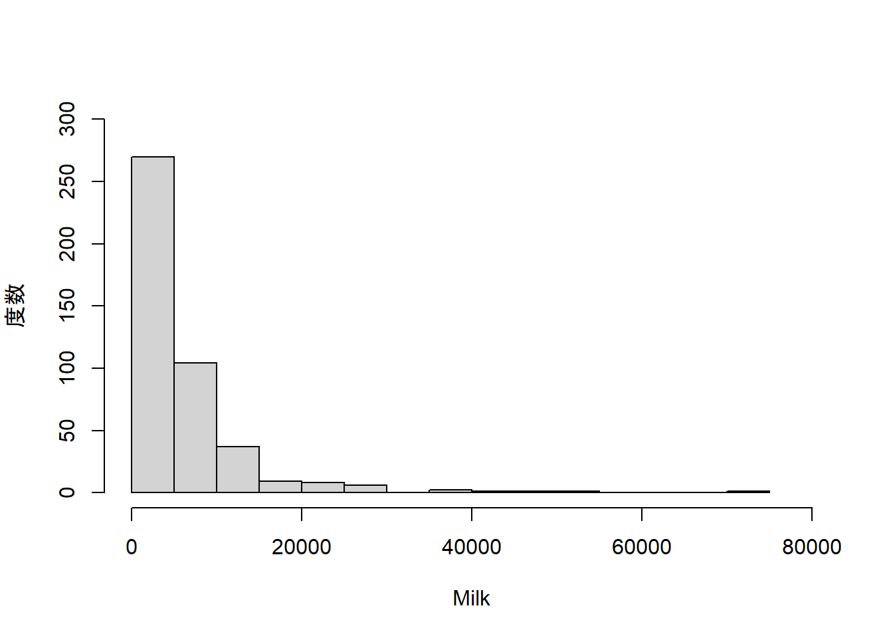
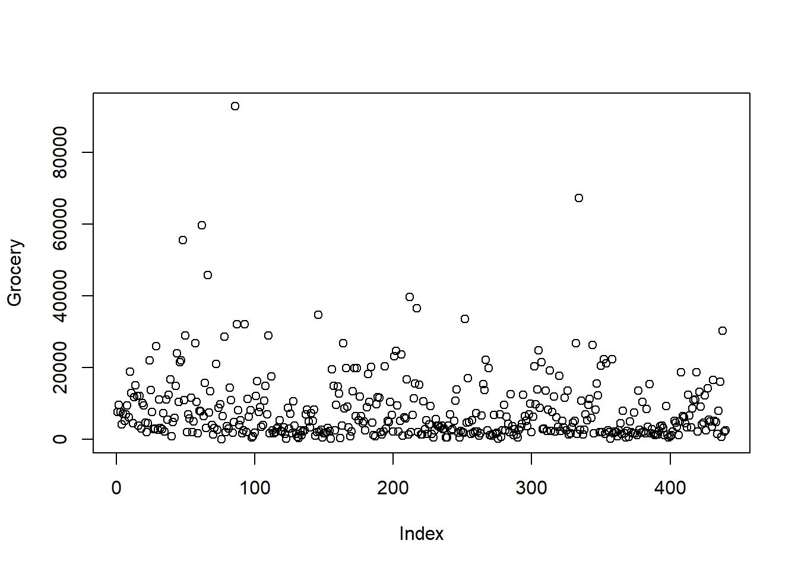

2.2 データの簡単な可視化
まず、機械学習関連の情報やサンプルデータを提供している、UCI Machine Learning Repositoryから、ある卸売業者の顧客データをダウンロードしてみましょう。ページを開いたら「Data Folder」のリンクをたどると、CSVファイルへのリンクがあるので、これをダウンロードしてください。ダウンロードしたファイルは作業ディレクトリ（プロジェクトフォルダの場所）に作成した「data」フォルダに保存しておいてください。
CSVファイルをread.csv()関数でRにインポートします。
## Channel Region Fresh Milk Grocery Frozen Detergents_Paper Delicassen
## 1 2 3 12669 9656 7561 214 2674 1338
## 2 2 3 7057 9810 9568 1762 3293 1776
## 3 2 3 6353 8808 7684 2405 3516 7844
## 4 1 3 13265 1196 4221 6404 507 1788
## 5 2 3 22615 5410 7198 3915 1777 5185
## 6 2 3 9413 8259 5126 666 1795 1451卸売業者の顧客データのページにおけるAttribute Informationの項目を見てみると、Channelは1がホテル、レストランやカフェ、2が小売の販売チャンネルを意味しています。また、Regionは1がリスボン、2がオポルト、3がその他の地域を表しているようです。これらは名義尺度の変数ですが、
## 'data.frame': 440 obs. of 8 variables:
## $ Channel : int 2 2 2 1 2 2 2 2 1 2 ...
## $ Region : int 3 3 3 3 3 3 3 3 3 3 ...
## $ Fresh : int 12669 7057 6353 13265 22615 9413 12126 7579 5963 6006 ...
## $ Milk : int 9656 9810 8808 1196 5410 8259 3199 4956 3648 11093 ...
## $ Grocery : int 7561 9568 7684 4221 7198 5126 6975 9426 6192 18881 ...
## $ Frozen : int 214 1762 2405 6404 3915 666 480 1669 425 1159 ...
## $ Detergents_Paper: int 2674 3293 3516 507 1777 1795 3140 3321 1716 7425 ...
## $ Delicassen : int 1338 1776 7844 1788 5185 1451 545 2566 750 2098 ...で分かるように、数値型として取り込まれています。これを名義尺度として扱うために、因子型に変換しておきます。
ws_customer$Channel <- factor(ws_customer$Channel, labels = c("Horeca", "Retail"))
ws_customer$Region <- factor(ws_customer$Region,
labels = c("Lisbon", "Oporto", "Other Region"))
str(ws_customer)## 'data.frame': 440 obs. of 8 variables:
## $ Channel : Factor w/ 2 levels "Horeca","Retail": 2 2 2 1 2 2 2 2 1 2 ...
## $ Region : Factor w/ 3 levels "Lisbon","Oporto",..: 3 3 3 3 3 3 3 3 3 3 ...
## $ Fresh : int 12669 7057 6353 13265 22615 9413 12126 7579 5963 6006 ...
## $ Milk : int 9656 9810 8808 1196 5410 8259 3199 4956 3648 11093 ...
## $ Grocery : int 7561 9568 7684 4221 7198 5126 6975 9426 6192 18881 ...
## $ Frozen : int 214 1762 2405 6404 3915 666 480 1669 425 1159 ...
## $ Detergents_Paper: int 2674 3293 3516 507 1777 1795 3140 3321 1716 7425 ...
## $ Delicassen : int 1338 1776 7844 1788 5185 1451 545 2566 750 2098 ...summary()関数を適用すると以下のようになります。
## Channel Region Fresh Milk
## Horeca:298 Lisbon : 77 Min. : 3 Min. : 55
## Retail:142 Oporto : 47 1st Qu.: 3128 1st Qu.: 1533
## Other Region:316 Median : 8504 Median : 3627
## Mean : 12000 Mean : 5796
## 3rd Qu.: 16934 3rd Qu.: 7190
## Max. :112151 Max. :73498
## Grocery Frozen Detergents_Paper Delicassen
## Min. : 3 Min. : 25.0 Min. : 3.0 Min. : 3.0
## 1st Qu.: 2153 1st Qu.: 742.2 1st Qu.: 256.8 1st Qu.: 408.2
## Median : 4756 Median : 1526.0 Median : 816.5 Median : 965.5
## Mean : 7951 Mean : 3071.9 Mean : 2881.5 Mean : 1524.9
## 3rd Qu.:10656 3rd Qu.: 3554.2 3rd Qu.: 3922.0 3rd Qu.: 1820.2
## Max. :92780 Max. :60869.0 Max. :40827.0 Max. :47943.02.2.1 棒グラフ
棒グラフは名義尺度と比例尺度の組からなるデータを可視化するツールですが、ここでは、Channel（名義尺度）ごとの度数（比例尺度）を棒グラフにしてみます。
##
## Horeca Retail
## 298 1422.2.2 ヒストグラム
量的変数の値の分布をみるにはヒストグラムを用います。ヒストグラムは、量的変数の範囲をいくつかの区間に分割し、区間ごとに描かれた棒の面積がその区間に含まれる値の個数に比例するようにしたものです。例えば、Milkのヒストグラムを描くには次のようにhist()関数を用います。
hist(ws_customer$Milk, breaks = 20,
xlim = c(0, 80000), ylim = c(0, 300),
xlab = "Milk", ylab = "度数", main = "")
break引数は分割する区間の数を指定します。
2.2.3 箱ひげ図
量的変数の値の分布を質的変数の水準ごとに比較する場合には箱ひげ図を用います。例えば、ChannelごとにMilkの分布を比較したい場合には、次のようにboxplot()関数を用います。
箱ひげ図は、箱の3本の水平線が下から順に第1四分位数、第2四分位数（中央値）、第3四分位数となっています。ひげ（箱の中央から延びる垂直な線）の下限と上限はそれぞれ、第1 四分位数-1.5\(\times\)四分位範囲から第3分位点+1.5\(\times\)四分位範囲内のデータの最小値および最大値となっています。その範囲外のデータは外れ値としてプロットされています。箱ひげ図は外れ値をチェックするツールとしても有効です。
2.2.4 散布図
2つの量的変数の値の組を座標平面上の点としてプロットしたものが散布図です。散布図を作成することで、2つの量的変数の関連性を見ることができます。例えば、Grocery（食料品）とDetergents_Paper（洗剤や紙製品）の散布図を描くには次のようにplot()関数を用います。
plot(ws_customer$Grocery, ws_customer$Detergents_Paper,
xlab = "Grocery", ylab = "Detergents_Paper")同じデータフレーム内の変数で散布図を描画する場合は、以下のように記述することもできます。
2.2.5 総称的関数
Rにおける関数のうち、総称関数（generic function）と呼ばれる関数は、引数の種類に応じて挙動が変わる性質を持ちます。例えば、plot()関数は、上のように2つのベクトルを引数として指定すれば、散布図を描画し、次のように、1つのベクトルを引数と指定すればインデックスプロットと呼ばれる、横軸にベクトルの要素番号、縦軸にベクトルの要素の値をプロットしたものが出力される。

summary()関数も総称関数であり、データフレームを引数として指定した場合は、各変数の要約を出力しますが、分析結果のオブジェクトを引数として指定した場合には、分析結果の要約を出力します（これは後述）。